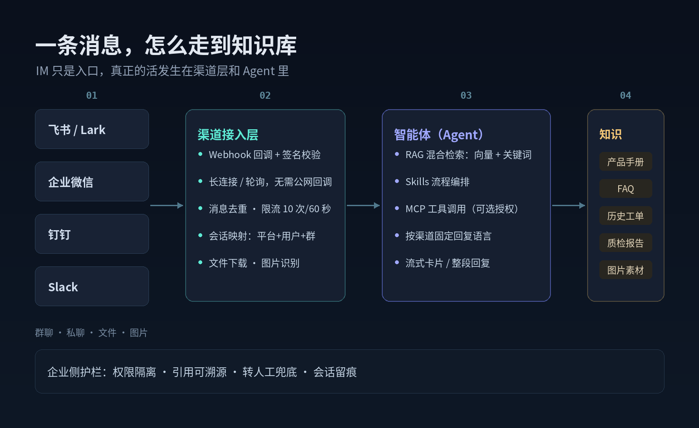
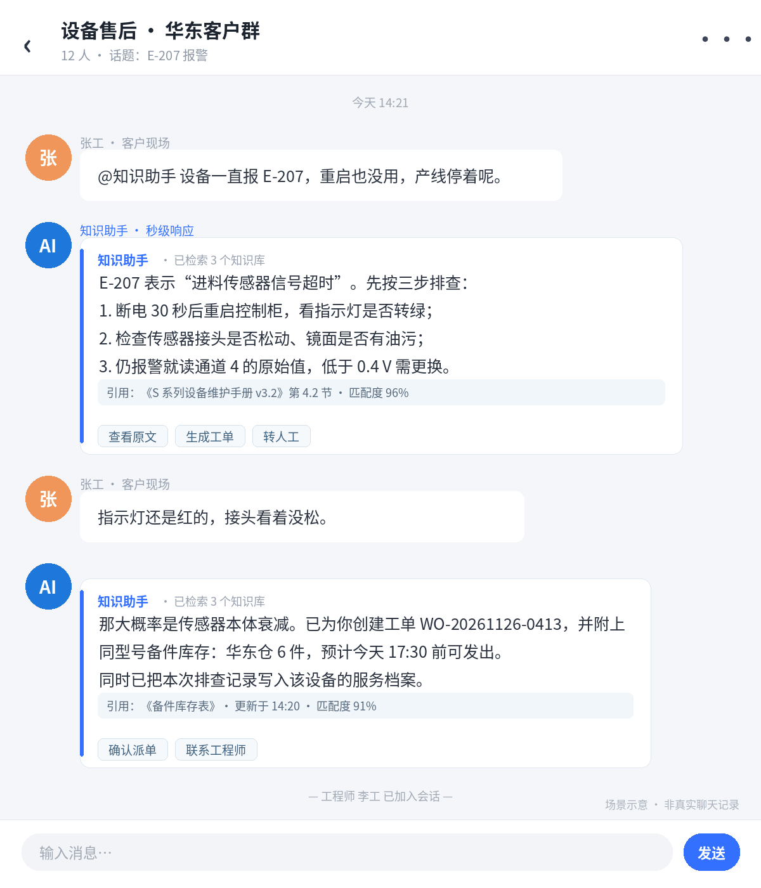
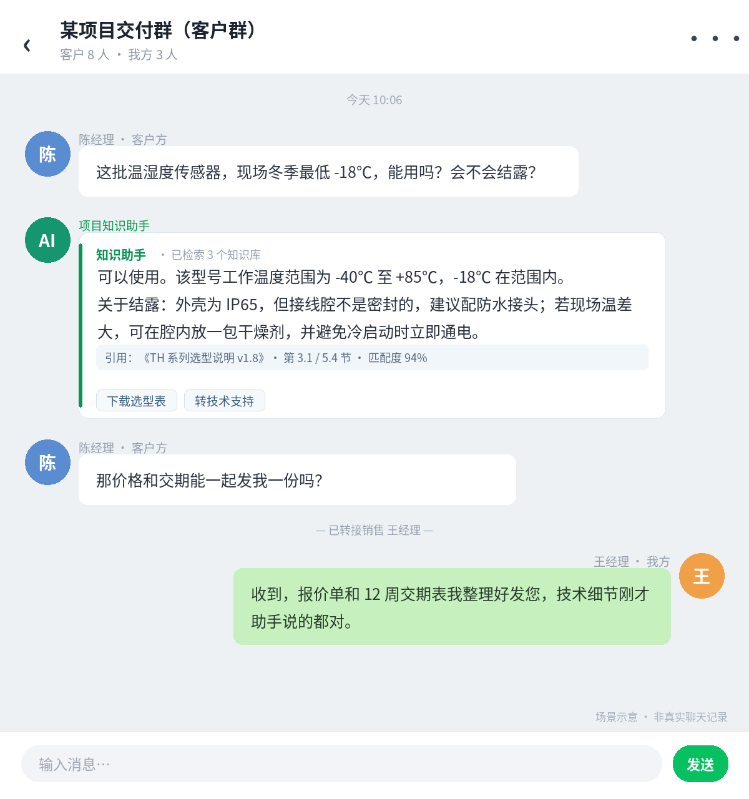
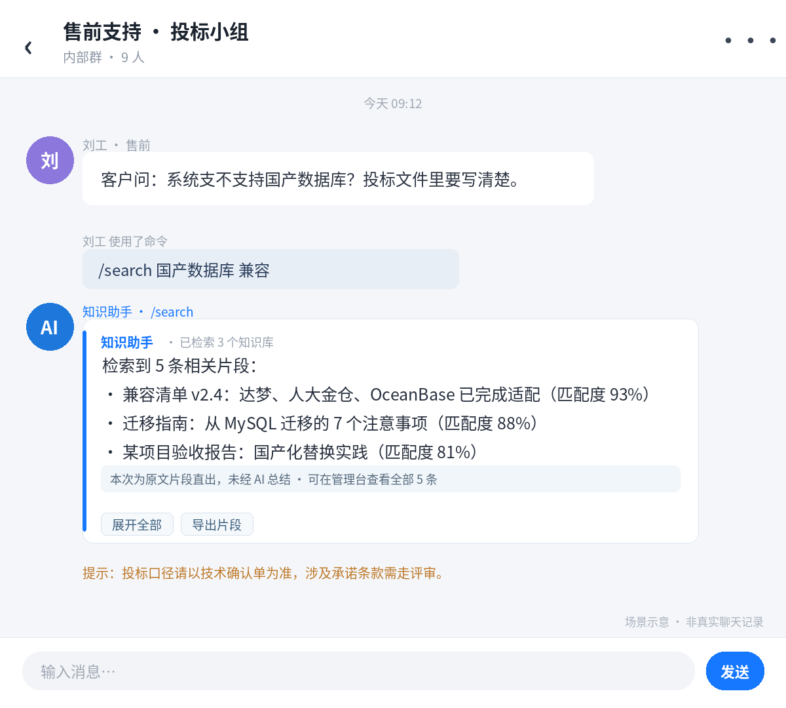

客户在群里问一句“这台设备一直报 E-207，怎么办”，然后就开始等。
传统路径是这样的：客服先截图，转给技术；技术翻手册，手册在某个共享盘里，版本还不一定对；确认完再回到群里回复。快则半小时，慢则半天，客户已经催了三遍。
而这条消息，本来可以不出聊天框。
企业知识库不缺内容，缺一个客户愿意用的入口。
腾讯开源的 WeKnora 提供了一个挺务实的答案：把智能体直接接进 IM。飞书、企业微信、钉钉、Slack、Telegram 等十个平台，客户在哪，知识就在哪回答问题。
01
为什么是 IM，而不是再做一个 App
过去几年，企业做知识库最常见的失败不是“检索不准”，而是“没人打开”。单独做一个门户、一个小程序、一个客服后台，推广成本高得吓人，员工和客户都不愿意多装一个东西。
IM 不一样。客户本来就在群里，销售本来就在飞书里，工程师本来就在钉钉里。把机器人拉进群，比让所有人换一个系统容易得多。
WeKnora 的 IM 集成就是干这个的。在「设置 → IM 集成」里新建渠道，选平台、填应用凭据、绑定一个智能体，启用即可。之后这个渠道里的提问，都会按绑定智能体的配置走：用哪个模型、能查哪些知识库、开不开联网、能不能调 MCP 工具。
每个渠道还能单独固定回复语言。跨国团队用同一个知识库，飞书群回中文、Slack 回英文，不用维护两套内容。
02
一条消息进来，中间发生了什么
很多人以为接入 IM 就是“配个 webhook”。真到企业环境里，麻烦全在细节。

从 IM 消息到知识库检索，再到回复的完整链路（示意）
消息先从平台进来。Webhook 模式下，回调地址填到平台后台，WeKnora 先响应平台的 URL 校验，之后每条回调都验签；长连接模式则由服务端主动连平台网关，不需要公网回调地址，内网部署会省心很多。
进来之后先立刻 ACK，避免平台超时重推；同时按消息 ID 去重，再按滑动窗口限流。默认是 10 次 / 60 秒，命令消息豁免。别小看这一步——客户群里有人连发十条，没有限流，模型账单会很难看。
然后是会话映射。默认的 user 模式按“平台 + 用户 + 群”区分会话，同一个人在私聊、群 A、群 B 里是三段独立记忆；切成 thread 模式，则同一线程里的人共享上下文。群聊场景通常用前者，避免不同客户的追问串到一起。
最后才轮到智能体。它按绑定的 Agent 配置做混合检索——向量加关键词——再决定要不要调 Skills 或 MCP 工具，最后以流式卡片或整段消息发回群里。
多实例部署时，长连接渠道靠 Redis 选主，同一时刻只有一个实例收消息；消息去重、/stop 的跨实例停止也都有对应的键。没有 Redis 的单实例模式会退回本地内存，功能不变，只是失去跨实例语义。
03
三个场景，三种群
下面三段对话，是按真实交互方式脱敏重构的示意，不是某家客户的原始记录。时间点、故障码、型号都做了处理，重点看流程。
场景一 · 售后群里的故障排查
14:21，客户在飞书售后群里 @ 机器人，只发了一句话：“设备一直报 E-207，重启也没用，产线停着呢。”

售后群示意：先给排查步骤，再引用手册原文，最后落工单
机器人先解释 E-207 的含义，给出三步排查，并附上引用：《S 系列设备维护手册 v3.2》第 4.2 节，匹配度 96%。客户试完说灯还是红的，机器人接着判断是传感器衰减，直接创建工单、查了华东仓备件，还顺手把排查记录写进设备档案。
整个过程四分多钟。人没有消失，只是从“翻手册的人”变成了“确认派单的人”。
场景二 · 客户群里的售前选型
10:06，企业微信的项目交付群里，客户问温湿度传感器能不能扛住 -18℃、会不会结露。

客户群示意：技术问题由机器人回答，价格与交期仍由销售接
机器人给了工作温度范围、IP65 的边界，以及“接线腔不密封、建议配防水接头”这种只有手册里才写着的细节，并附上选型说明的章节号。
客户下一句问价格和交期，机器人没有硬答，而是触发转接，销售接话。该答的答清楚，不该承诺的一律交给人。这条边界，比回答本身更重要。
场景三 · 内部群里的投标支持
09:12，钉钉的投标小组群里，售前问系统支不支持国产数据库。他没有等机器人猜，直接发了命令：
/search 国产数据库 兼容

内部群示意：/search 直出原文片段，不经过 AI 总结
这是我觉得最实用的一个命令。/search 不做 AI 总结，直接返回混合检索到的原文片段，最多 5 条、每条 200 字，带匹配度。投标这种场景，需要的是“原文怎么写的”，不是“AI 怎么理解的”。
机器人最后还补了一句：投标口径以技术确认单为准，涉及承诺条款要走评审。这句提醒不是装饰，是企业 RAG 必须有的护栏。
把一天串起来，大概是这样的：
| 时间 | 场景 | 结果 |
|---|---|---|
| 09:12 | 钉钉投标群问兼容性 | 原文片段直出，3 分钟整理完 |
| 10:06 | 企微客户群问选型 | 技术问题闭环，价格转销售 |
| 14:21 | 飞书售后群报故障 | 排查 + 工单 + 备件，4 分钟 |
| 17:40 | 当天复盘 | 47 次提问，31 次机器人闭环 |
表中数字为示意，用于说明一天内的典型节奏，不代表任何具体企业的真实统计。
04
那些真正决定好不好用的细节
群里要不要 @ 机器人。飞书群聊通常要 @，长连接收到的文本会带 @ 前缀，适配器会先剥掉再处理。回复优先走话题线程；群不支持话题时自动回退普通消息，不会因为一个错误码就沉默。
文件和图片直接当附件用。客户甩一张铭牌照片、一份故障记录，机器人会下载后交给模型理解。即使没有单独配置“文件知识库”，也能基于附件内容回答。想顺手入库，就绑一个知识库 ID，后台异步保存，不影响当前这轮回复，也不会额外刷一条“已入库”。
限制也要知道：文件超过 32 MiB、平台不支持下载、内容读不出来时，机器人会提示改用文字描述。解析文本最多保留前 500 行、不超过 32 KiB，超了会给模型一个截断提示。
回答里引用知识库图片，需要额外配一步。正文里存的是 resource:// 这类内部引用，IM 客户端拉不到。系统会在发送前改写成可访问的 http(s) 链接，前提是存储公网可达，或者配好 APP_EXTERNAL_URL 走反向代理。这两条都不满足，图片就会显示不出来。
五个内置命令够日常用了。/help 看指令，/info 看当前绑定的 Agent 能查哪些库、开了哪些能力，/search 直出原文，/stop 打断长推理，/clear 清空当前会话记忆。
05
企业最在意的，其实是护栏
机器人答得准，只是及格线。真正让企业敢上生产的是四件事：
权限隔离。渠道绑的是哪个 Agent，就只能查那个 Agent 可达的知识库；受限的 API key 还要在知识库白名单内。不是“搜到就能看”。
引用可溯源。回答带章节和匹配度，点开能回到原文。客户追问“你凭什么这么说”，有据可查。
转人工兜底。价格、交期、承诺条款这些不该让模型拍板的内容，明确交给销售或技术。机器人负责把上下文整理好再转。
会话留痕。每个平台用户、每个群都映射到独立会话，排查问题时能回看当时问了什么、检索到什么、答了什么。
还有一个容易被忽略的点：MCP 授权。IM 里没有可交互的前端，遇到需要 OAuth 的服务，机器人不会卡住等授权，而是继续回答，在末尾附一条授权链接。链接和“租户 + 渠道 + 平台 + IM 用户”绑定，用户点完重新发一次原消息，工具就能用了。
06
想落地，按这个顺序来
1. 先选一个高频、边界清晰的场景，比如售后故障码查询，别一上来就做“万能客服”。
2. 把该场景的文档收拢：手册、FAQ、历史工单。版本一定要统一，知识库最怕旧文档。
3. 建一个专用 Agent，只挂这类知识库，把边界收窄。
4. 在「设置 → IM 集成」建渠道，优先用长连接，省掉公网回调。
5. 先拉一个内部群灰度，让销售和售后自己先问两周，把答错的条目挑出来。
6. 再接客户群，同时设好转人工规则和监控指标：提问量、闭环率、转人工率、引用命中率。
07
最后说几句实话
IM 集成不是魔法。知识库过期，它就会一本正经地答错；文档写得含糊，它也只能含糊。检索命中率上不去，换哪个 IM 都没用。
它真正解决的，是“最后一公里”的摩擦：让知识在客户提问的地方出现，而不是让客户跑到知识存在的地方。
别指望它替掉人。更好的分工是：机器人负责“查得到、说得清、有出处”，人负责“判断、承诺、收尾”。
把入口降到零，知识库才算真正上线。
说明：文中聊天截图均为按交互方式脱敏重构的示意，非真实客户数据，也不含任何平台图标；平台名称仅用于说明接入方式。产品能力与参数以 WeKnora 官方文档及最新版本为准。